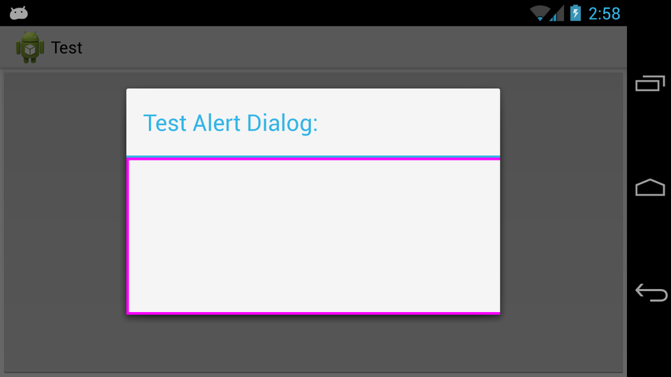
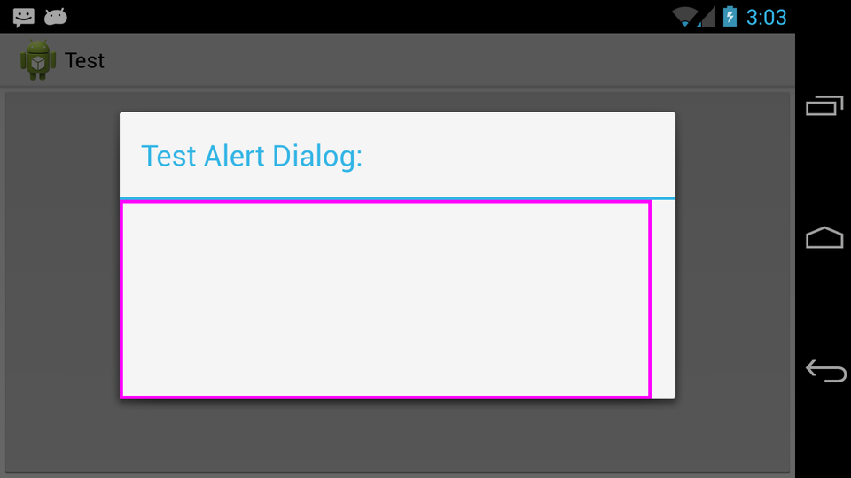

我正在建立的应用程序中遇到这个问题。 请忽略所有的设计缺陷和缺乏最佳做法的方法，这纯粹是为了展示我无法解决的一个例子。
我有DialogFragment ，它返回一个使用AlertDialog.Builder.setView()的自定义View集的基本AlertDialog 。 如果此View具有特定的大小要求，如何让Dialog正确调整自己的大小以显示自定义View中的所有内容？
这是我一直在使用的示例代码：
package com.test.test;
import android.os.Bundle;
import android.app.Activity;
import android.app.AlertDialog;
import android.app.Dialog;
import android.app.DialogFragment;
import android.content.Context;
import android.graphics.Canvas;
import android.graphics.Color;
import android.graphics.Paint;
import android.graphics.Paint.Style;
import android.view.Gravity;
import android.view.LayoutInflater;
import android.view.View;
import android.view.WindowManager;
import android.view.View.OnClickListener;
import android.view.ViewGroup;
import android.view.ViewGroup.LayoutParams;
import android.widget.ArrayAdapter;
import android.widget.Button;
import android.widget.EditText;
import android.widget.FrameLayout;
import android.widget.LinearLayout;
import android.widget.Spinner;
import android.widget.TextView;
public class MainActivity extends Activity {
@Override
protected void onCreate(Bundle savedInstanceState) {
super.onCreate(savedInstanceState);
// Use a button for launching
Button b = new Button(this);
b.setText("Launch");
b.setOnClickListener(new OnClickListener() {
@Override
public void onClick(View v) {
// Launch the dialog
myDialog d = new myDialog();
d.show(getFragmentManager(), null);
}
});
setContentView(b);
}
public static class myDialog extends DialogFragment {
@Override
public Dialog onCreateDialog(Bundle savedInstanceState) {
// Create the dialog
AlertDialog.Builder db = new AlertDialog.Builder(getActivity());
db.setTitle("Test Alert Dialog:");
db.setView(new myView(getActivity()));
return db.create();
}
protected class myView extends View {
Paint p = null;
public myView(Context ct) {
super(ct);
// Setup paint for the drawing
p = new Paint();
p.setColor(Color.MAGENTA);
p.setStyle(Style.STROKE);
p.setStrokeWidth(10);
}
@Override
protected void onMeasure(int widthMeasureSpec, int heightMeasureSpec) {
setMeasuredDimension(800, 300);
}
@Override
protected void onDraw(Canvas canvas) {
// Draw a rectangle showing the bounds of the view
canvas.drawRect(0, 0, getMeasuredWidth(), getMeasuredHeight(), p);
}
}
}
}
将创建一个Button ，该Button将在点击时打开DialogFragment 。 自定义View （ myView ）需要宽度为800，高度为300，这是在onMeasure()的覆盖中正确设置的。 此View ，绘制其测量的洋红色范围用于调试目的。
800宽度比我的设备上的默认Dialog大小更宽，但是被裁剪而不是正确拉伸。
我看过以下解决方案：
- DialogFragment.getDialog返回null
- 如何控制Android中默认的“警报”对话框的宽度和高度？
- 警报对话框或自定义警报对话框的大小
我推断了以下两种编码方法：
- 获取
Dialog的WindowManager.LayoutParams并使用myDialog.getDialog().getWindow().get/setAttributes()来覆盖它们myDialog.getDialog().getWindow().get/setAttributes() - 使用
setLayout(w, h)方法通过myDialog.getDialog().getWindow().setLayout()
我已经尝试过它可以想到的东西（覆盖onStart() ，在onShowListener ，在创建和显示Dialog之后），并且如果LayoutParams提供了一个特定的值，通常可以使这两种方法正常工作。 但是每当提供WRAP_CONTENT ，都不会发生任何事情。
有什么建议么？
编辑：
情况截图： 
具体值的屏幕截图（注意到这里输入900，没有覆盖视图的整个宽度，这在整个窗口都被调整的情况下是有道理的，因此，如果需要另外一个窗口，这就是为什么WRAP_CONTENT必不可少的原因/固定值不合适）： 